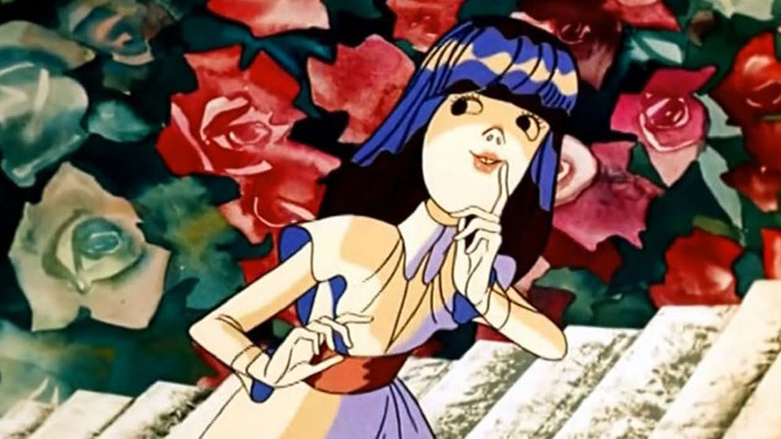

Приветствие Глава I Глава VI Глава VII
Скажи-ка дружок, где начинается день? А? Если идти над землей вместе с солнышком, то как определить, где кончается вторник, а где начинается среда? Английский писатель Льюис Кэрролл считал, что это происходит наверное где-нибудь над океаном, а они такие большие моря и океаны и все так плохо знают, что там над ними происходит… Вот никто и не видел никогда, как вторник становится средой.
Жил да был такой замечательный писатель Льюис Кэрролл. Стоп! Уже началась путаница. Ты привыкай дружок – путаницы здесь будет предостаточно. А какая же настоящая сказка, настоящая интересная игра бывает без путаницы? Так в чем здесь путаница? В жил был… Дело в том, что жить-то он жил, а быть-то его не было. А? Э…
Потому что на самом деле был совсем другой человек, которого звали Чарльзом Лютвиджем Доджсоном. Однажды для Алисы, одной своей знакомой маленькой девочке, он начал рассказывать сказку, тогда-то и родился писатель Льюис Кэрролл, потому что когда потом он её напечатал, То подписался этим вымышленным именем. И начал жить и живет до сих пор… Вот тебе и жил был. А? Э…
Так что же остается, когда съедена банка варенья? Что останется, когда спета песня? От Льюиса Кэрролла осталась его улыбка. Кто это улыбается? Сам Льюис Кэрролл, а может быть чеширский кот (персонаж его сказки)? Дослушай до конца и если ты будешь внимателен, а потом ещё чуточки подумаешь – обязательно поймешь!
